Small Scale Challenges in CDM Model
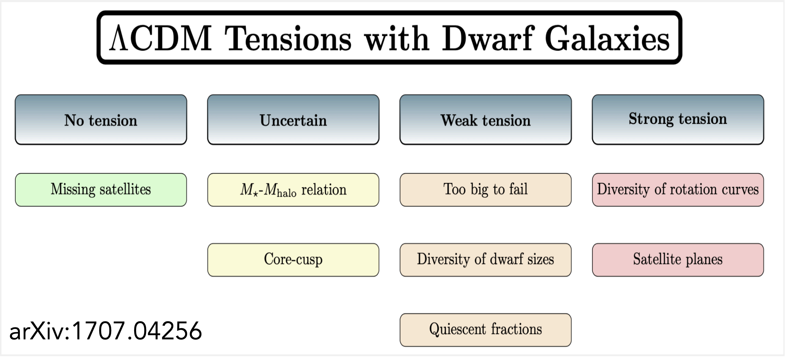
Potential Problem:
Absence of Baryonic Processes (Feedback, Formation) and/or Nature of DM!
arXiv:2206.05295
Alternative Dark Matter Models
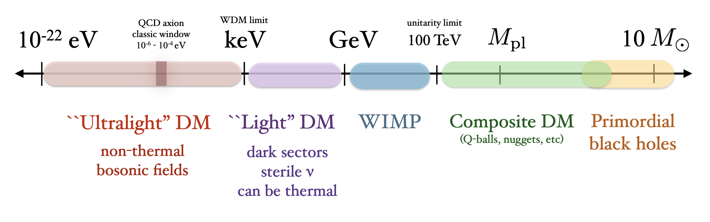
Warm Dark Matter (WDM)
Favored mass range in tension with Lyα observation & abundance of high-z galaxies
Strong microlensing constraints
Self-Interacting DM (SIDM)
Needs fine-tuned cross-sections & struggles to explain full range of observations
No empirical detection
arXiv:2408.00082
Fuzzy Dark Matter (FDM)
- Extremely light scalar particle (m ∼ 10−20–10−22 eV)
- Non-thermally produced (not ultra-hot)
- Clumps to form Bose-Einstein Condensate (BEC)
- Quantum effects counteract gravity at small scales
- Tiny mass → large de Broglie wavelength (~1/m) → macroscopic quantum effects at kpc scales
Also known as: F(C)DM, BECDM, ULDM, ELBDM, ultra-light axion DM (ULA, ALP)
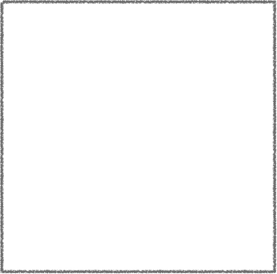
FDM Density Field
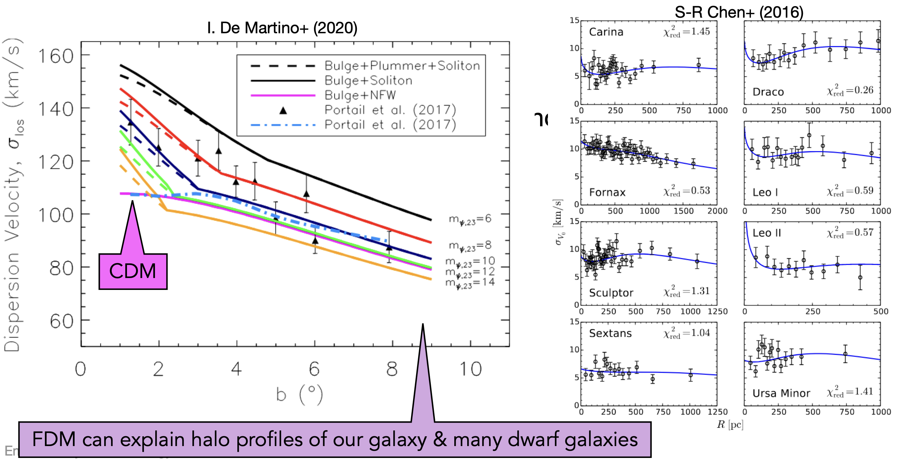
FDM Potential Signature in 21cm Power Spectrum
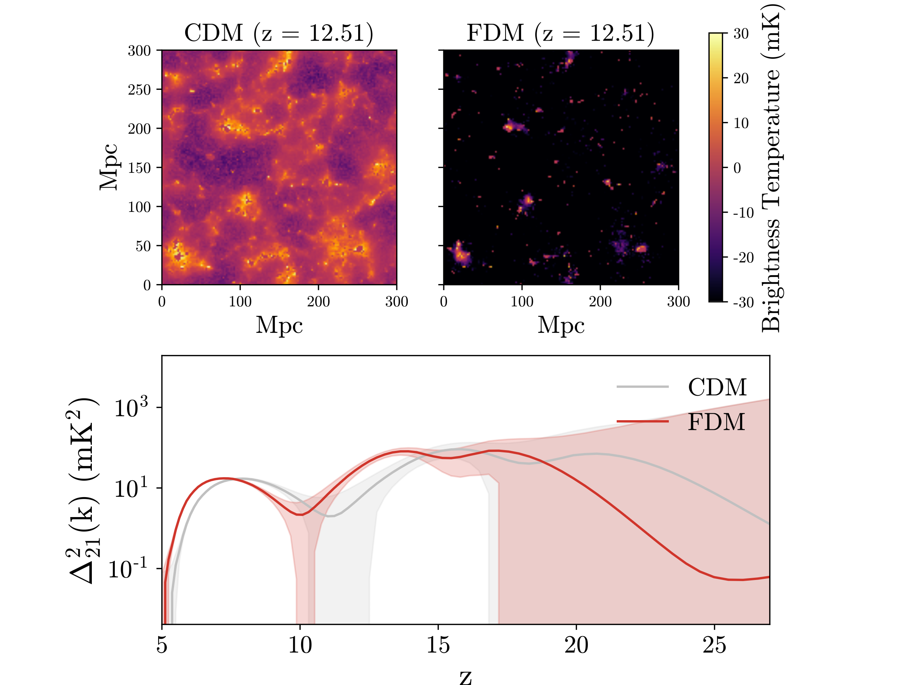
FDM Mass Constraints Based on PLin 🤔
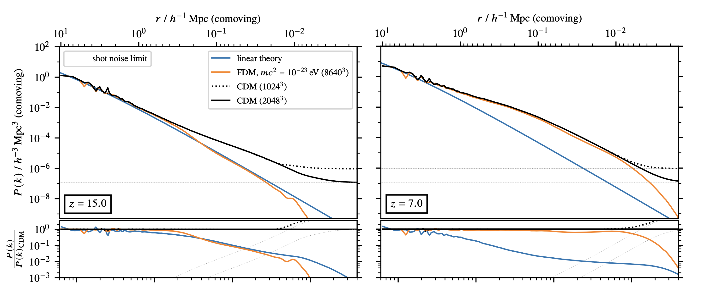
May & Springel 2021
FDM Limit Ruled Out!? (From Ultra-Dwarf Galaxies)
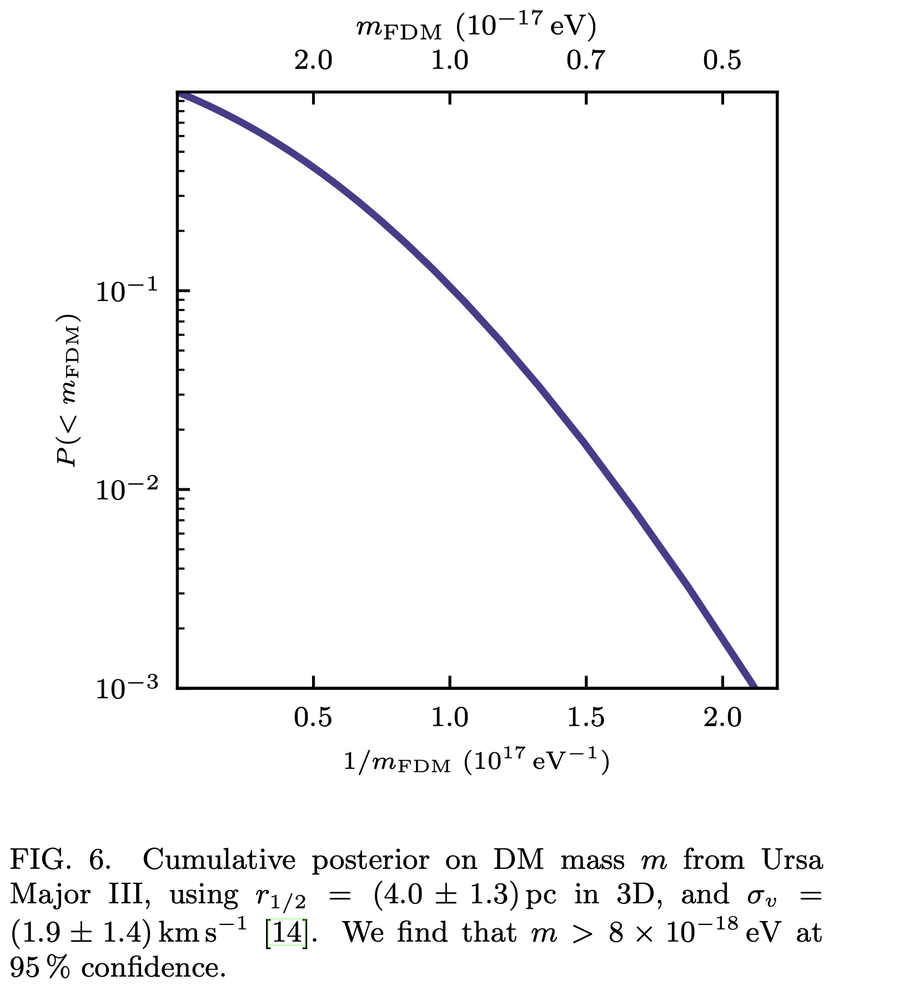
Result:
m > 8 × 10−18 eV (95% C.L.)
Bound is conservative: perturbative heating underestimates full SP result → true limit likely stronger!
May et al. 2025 (arXiv:2509.02781)
Diversity of Halos in Two-Field FDM Cosmology 🧐
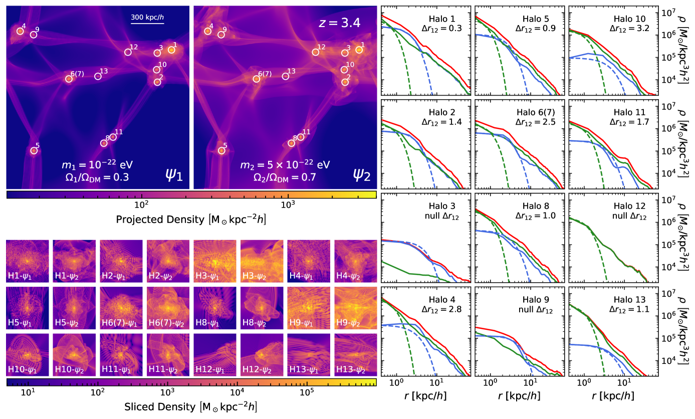
arXiv:2408.00827
Governing Equations
A. Wave Formalism (Schrödinger–Poisson)
∇²V = 4πGm(|ψ|² − |ψ₀|²)
B. Madelung Formalism (Fluid Representation)
∂tv + (v·∇)v = −(1/m)∇(V − Q)
Q = −(ℏ²/2m)(∇²√ρ/√ρ) — "Quantum Pressure"
Q ill-defined at ρ=0!
Transformation
ψ = √(ρ/m) · eiS
ρ = m|ψ|² v = (ℏ/m)∇S
Mean Field Interpretation:
Single Macroscopic Wave Function of BEC
Fuzzy Dark Matter Simulations
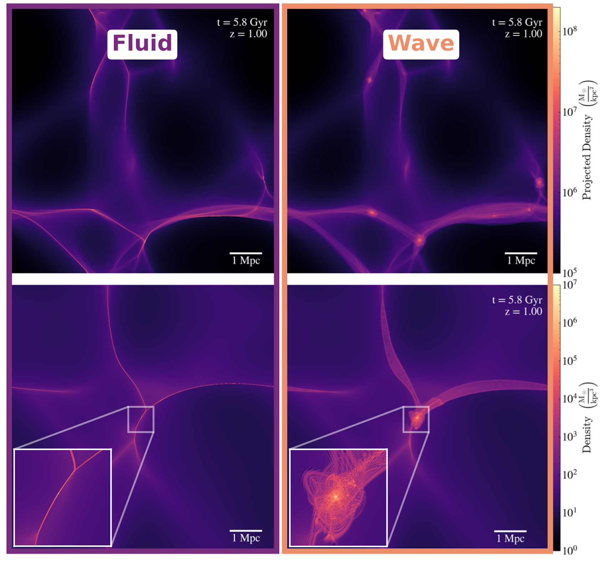
→ Stick to SP equations for evolution.
A. Kunkel et al. 2024
Challenges in Simulating Fuzzy Dark Matter
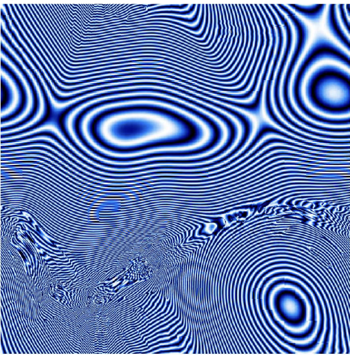
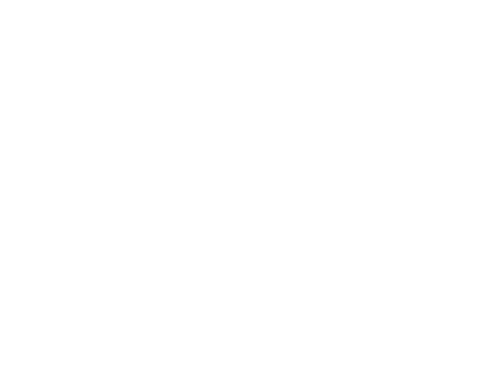
- Both Mpc-scale and kpc-scale must be resolved for accurate evolution
- Time step scaling: Δt ∼ Δx²
- Hydrodynamical codes used in N-body sims (but fluid formulation for FDM?)
- Sims so far restricted to small box sizes ≲10 Mpc/h
Schive, Chiueh & Broadhurst (2014)
Challenges — Adaptive Mesh Refinement
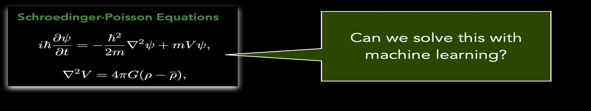
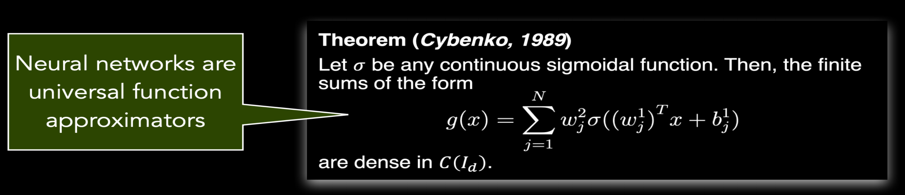
- Both Mpc-scale and kpc-scale must be resolved for accurate evolution
- Δt ∼ Δx² — extremely expensive
- Simulations restricted to small box sizes of 10 Mpc/h
Schive, Chiueh & Broadhurst (2014)
Physics-Informed Neural Networks (PINNs)
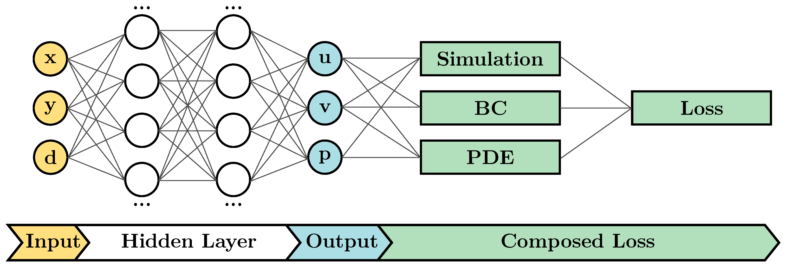
B[NN(X,θ)] = g(X), X ∈ ∂Ω
Custom Loss Function with PDE and boundary conditions as additional constraints
✓ Pretty successful in Fluid and Climate Simulations!
Raissi, Yazdani, Karniadakis 2020
Adapted from F. Pioch et al. 2023
Roadmap
SPINN: Coordinate-based PINNs for SP equations
Generative Modeling: Physics-informed super-resolution & evolution
Schrödinger–Poisson Informed Neural Networks (SPINN)
Inputs:
⬇ Neural Network ⬇
∇²V = 4πGm(|ψ|² − |ψ₀|²)
SPINN — Automatic Differentiation
⬇ Neural Network ⬇
Use automatic differentiation to calculate:
∂tψ, ∇²ψ, ∇²V, ...
SPINN — Physics Loss
⬇ Neural Network ⬇
ℒ = |i∂ψ/∂t + ∇²ψ/2 − mVψ|² + |∇²V − |ψ|² + 1|²
+ Loss for initial and boundary conditions
Use backpropagation to minimize all losses jointly
SPINN Density Predictions
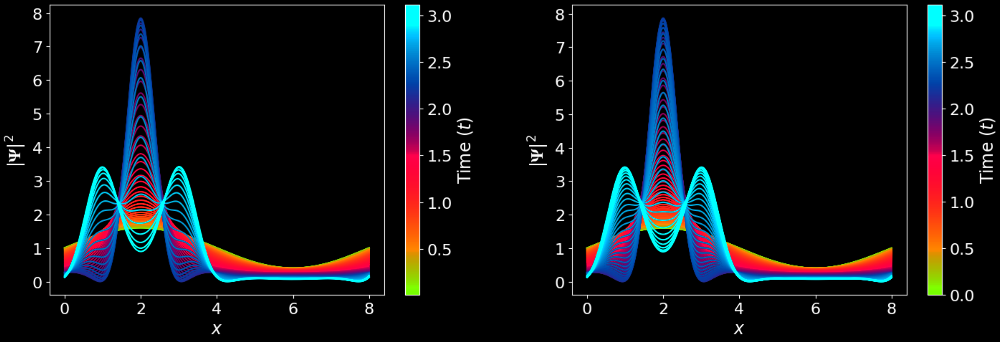
1D NN vs 1D Sim
3D NN vs 3D Sim
Mishra & Tolley, ApJ 2025
What About Cosmological FDM Simulations?
Super-Resolution Model
Learn the low-res → high-res mapping:
Evolution Model
Physics-informed generative models to simulate/interpolate across redshifts:
Physics-Informed UNet Architecture

FDM Simulation with Finer Time Steps (1 Mpc Boxes)
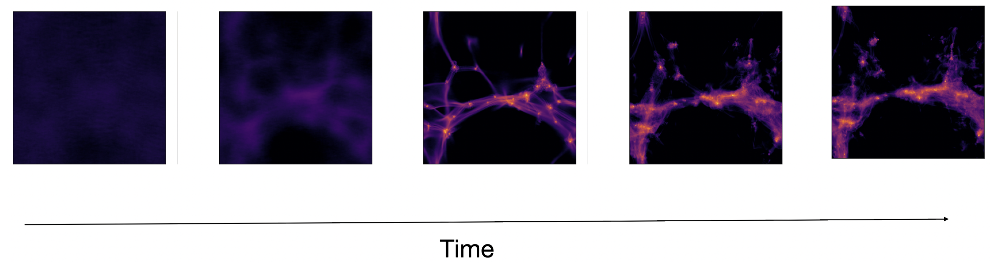
Projected FDM density snapshots across time: z = 127 (left) → z = 0 (right)
Simulation with Jaxion (P. Mocz)
Data for Physics-Informed UNet
- 1 Mpc/h FDM boxes at redshifts z = 127 to z = 0 simulated with Jaxion (P. Mocz)
- Fine-step simulations with da = 10−5/10−6 (essential!)
- Original resolution: 256³ voxels
- Multiple realizations of ICs
Evolution Task
Downsampled to 64³ voxels
Super-Resolution
Low-res: 32³ → High-res: 128³
Cosmo-SPINN Trained on 1 Mpc Boxes
iℏ ∂τψc = −(1/2m)∇c²ψc + mVψc
∇c²Φc = 4πGam|ψc|² − ⟨|ψc|²⟩
Introduce supercomoving time: dτ = a−2dt
Redefine V ≡ aΦc
Training scale factor range:
asingle ∈ [0.149, 0.157] (z = 5.71 to 5.37)
amulti ∈ [0.0798, 0.803]
Super-Resolution Model: Physics Residuals Comparison
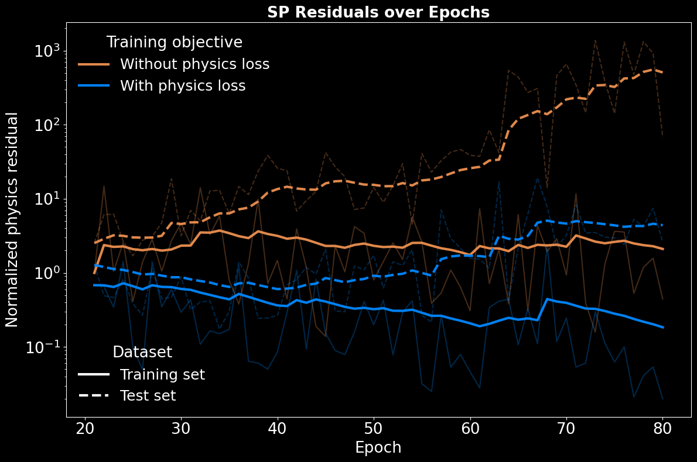
SP Residuals
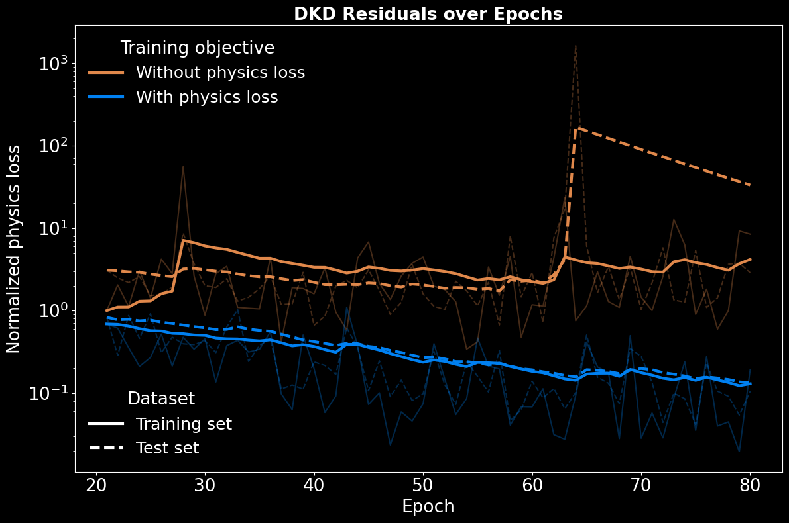
DKD Residuals
⚠️ SP: Stronger physics enforcement, reduced convergence stability
✓ DKD: More robust regularization, consistent train–test behaviour
Super-Resolution Model: Results with SP Residuals
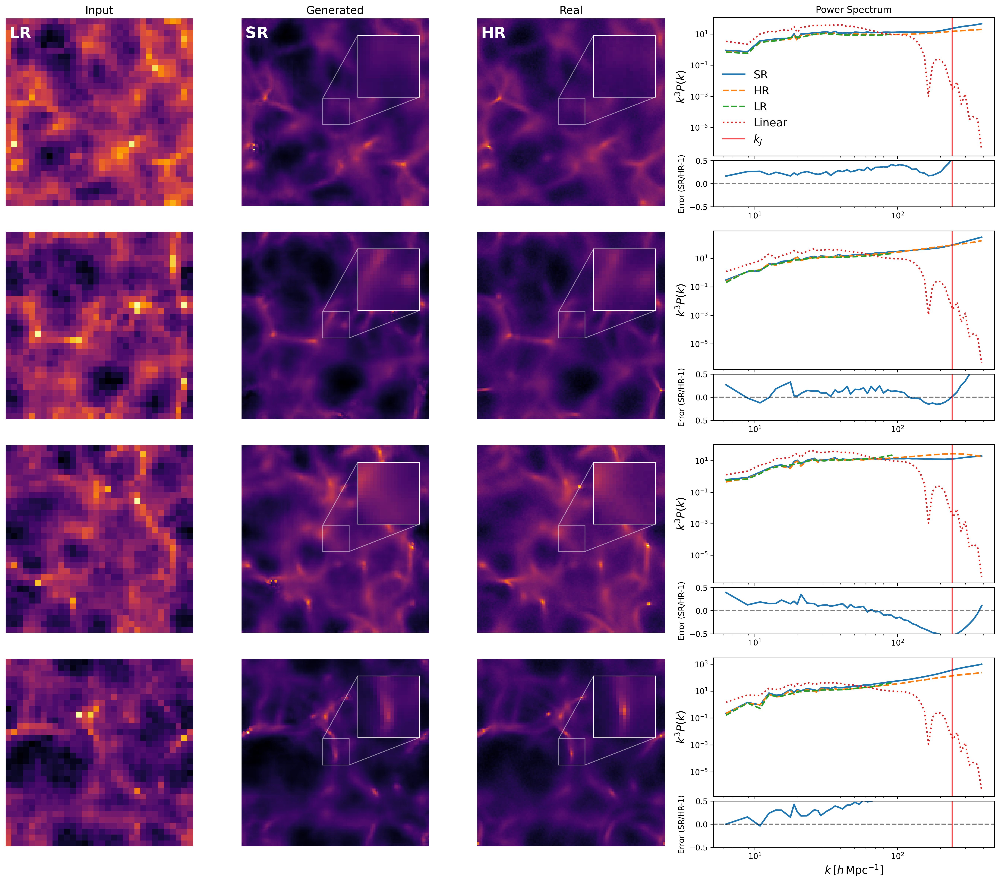
Super-Resolution Model: Results with DKD Residuals
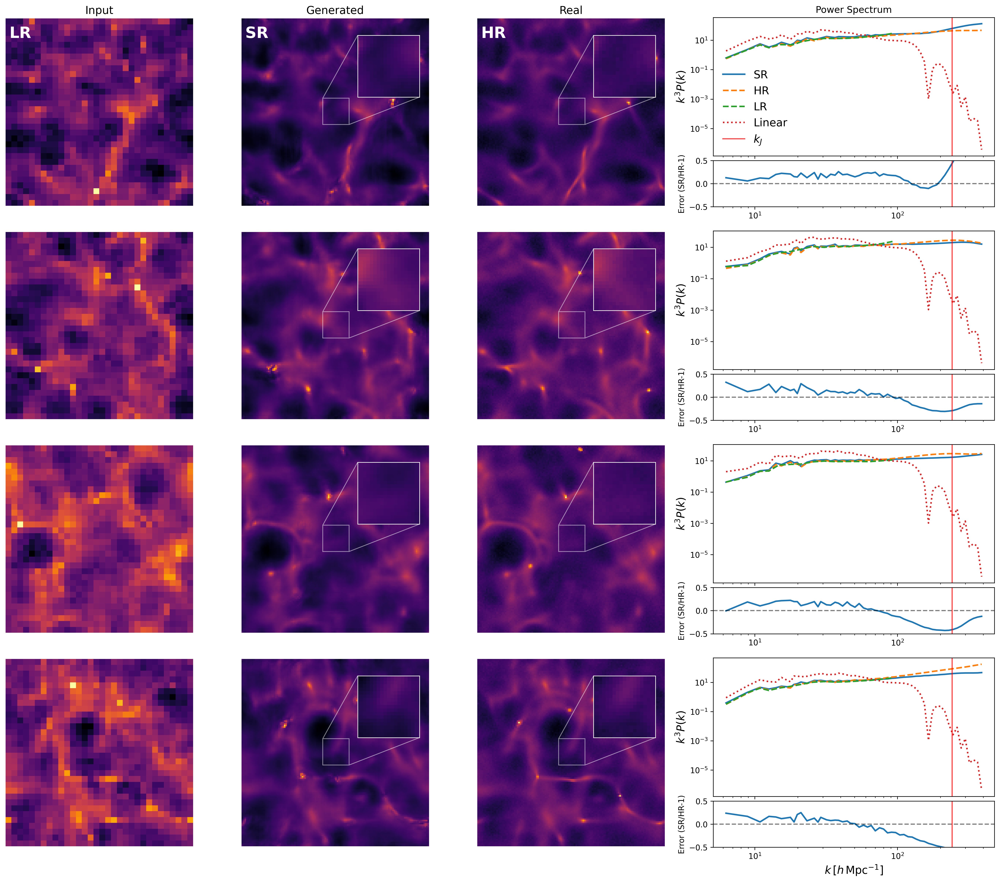
Super-Resolution: Power Spectrum Statistics
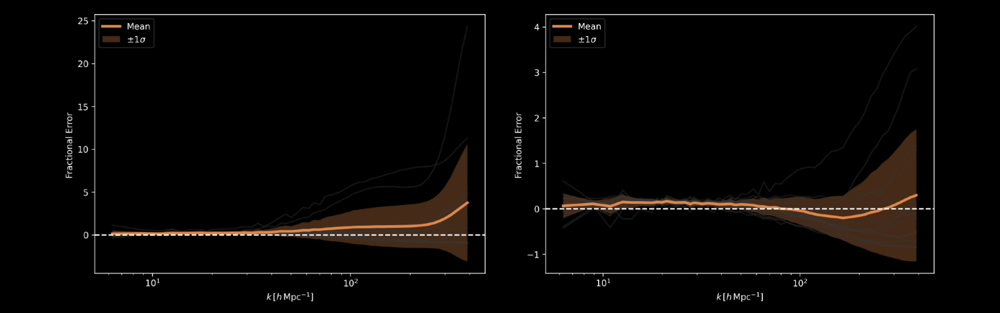
🔵 SP: Better small-scale recovery, larger variance
🟣 DKD: Lower variance, smoother reconstruction
From Neural Networks to Neural Operators
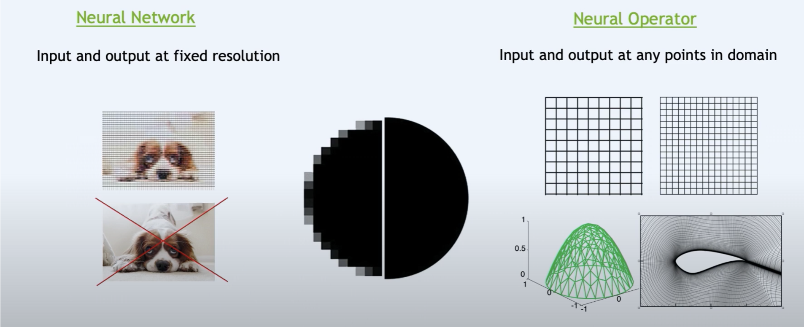
Neural Networks
Learn a function: y = f(x)
Vectors → Vectors
Neural Operators
Learn an operator: u = G(a)
Functions → Functions
FNO (DKD Predictor): Autoregressive Prediction
DKD = Drift–Kick–Drift (traditional FDM method)
FNO models the correction step
Autoregressive FNO Results: Unseen Test Realization
Takeaways
PINNs & FNOs as independent methods to generate WDM sims from scratch
Physically reliable high-resolution WDM sims with physics-informed generative modeling
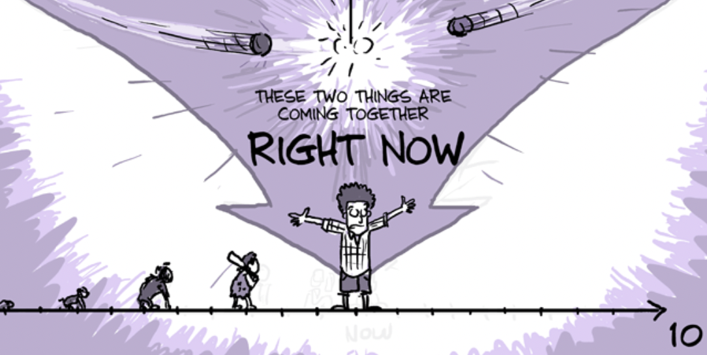
Work in Progress
(Still to get to large boxes with PINNs)
Neural Operators (NO) for consecutive time-step predictions: long runs
Reproducing Core-Halo Relations for FDM with PINNs
Physics-informed NO for painting FDM small-scale features
Extending Cosmo-SPINNs to larger boxes and longer time intervals
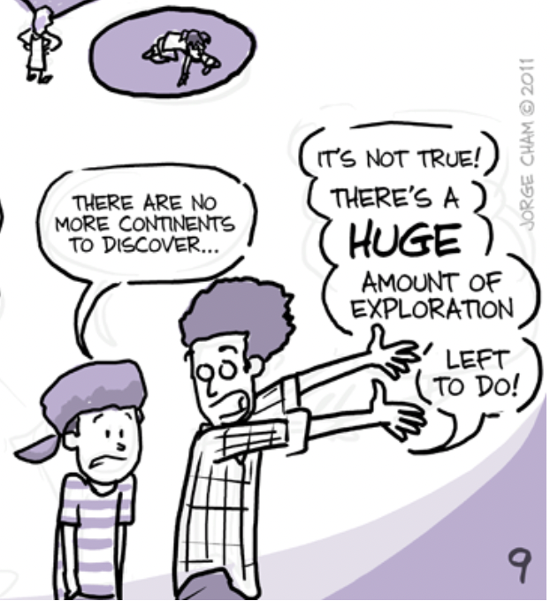
Back-up Slides
Cosmo-SPINN: Multiple Realizations (1 Mpc Boxes)
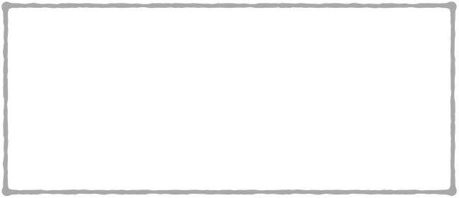
Real vs Predicted R, I, V given the redshift and different initial conditions (with physics-informed loss after warm-up)
Good overall large scale, some hallucinations at small scales!
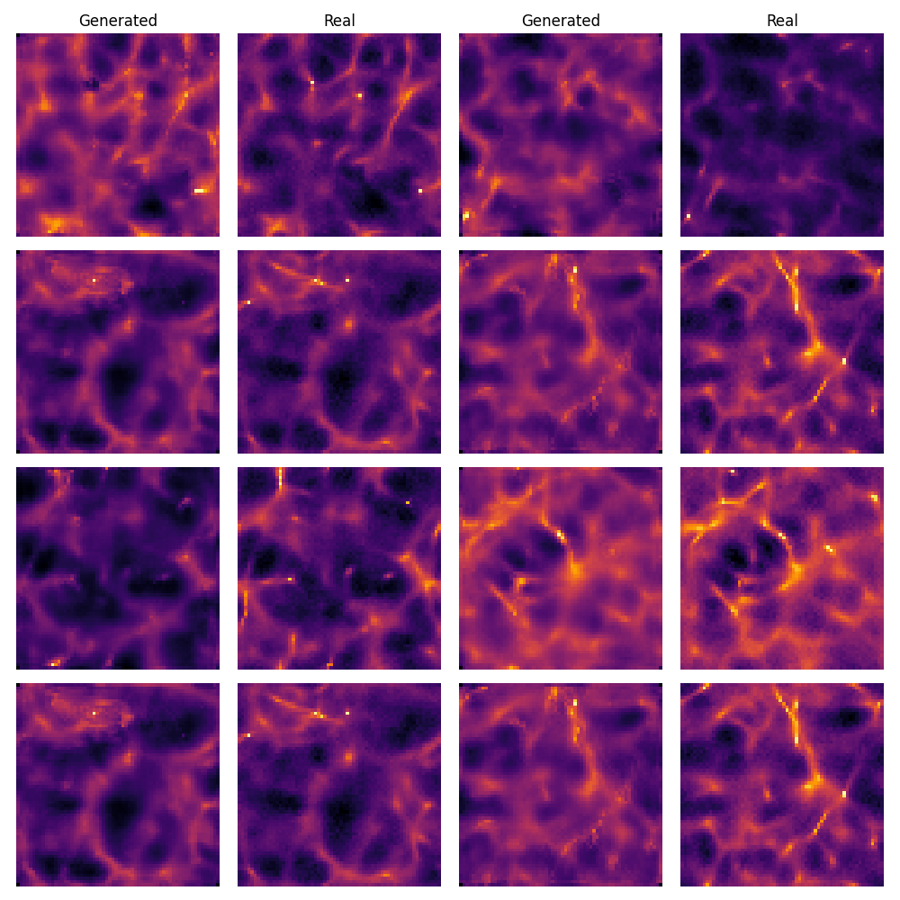
Extension to Multi-Realization ICs
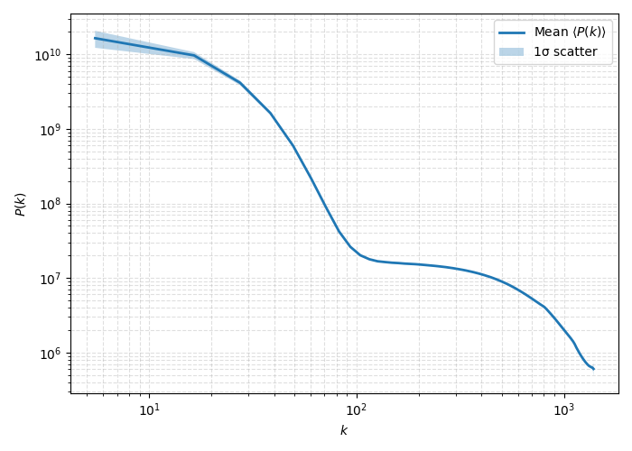
As expected, larger scatter on large scales!
- AxionCAMB for Power-Spectrum (ma = 2.5×10−22 eV)
- JaxPM for displacement & velocity fields (x, v) using LPT 2nd Order
- Custom code to convert to FDM wave function Ψ
Fuzzy Dark Matter: Linear Power Spectrum
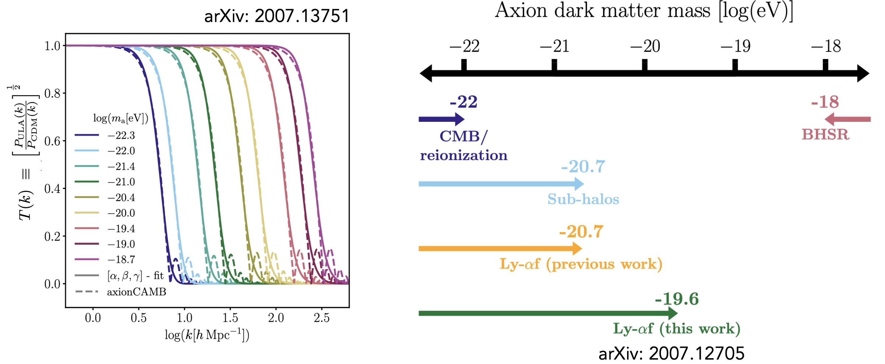
Linear theory predicts sharp cutoff in power spectrum due to quantum pressure
Direct Probe of DM Distribution
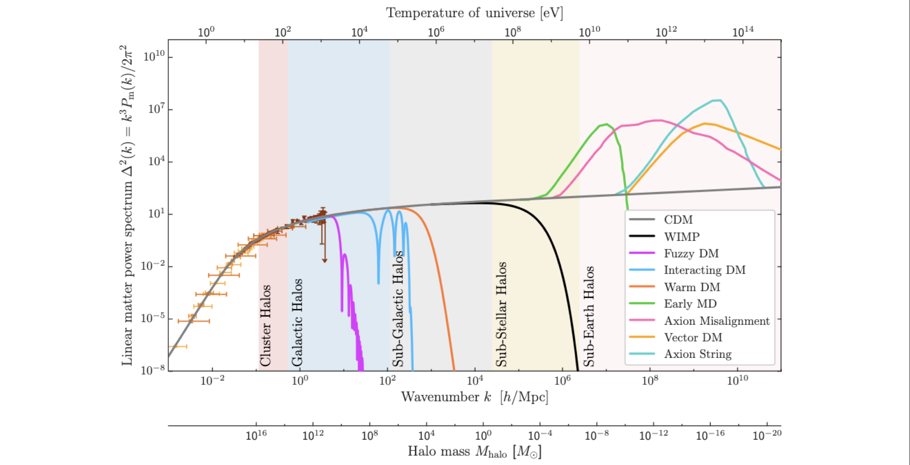
Bechtol et al. 2023 — Power spectrum, halo mass profile
Numerical Method: 2nd Order Unitary Spectral Method
- Calculate potential: V = IFFT[−k⁻²·FFT(4πGm(|ψ|²−|ψ₀|²))]
- Half-step Kick: ψ ← exp[−i(m/ℏ)(Δt/2)V]·ψ
- Full-step Drift (Fourier space): ψ ← IFFT[exp(−iΔt(ℏ/m)k²/2)·FFT(ψ)]
- Update potential
- Another half-step Kick: ψ ← exp[−i(m/ℏ)(Δt/2)V]·ψ
Drift: ψ ← IFFT[e−iΔt(ℏ/m)k²/2·FFT(ψ)]
V: = IFFT[−k⁻²·FFT(4πGm(|ψ|²−|ψ₀|²))]
Mocz et al. 2017